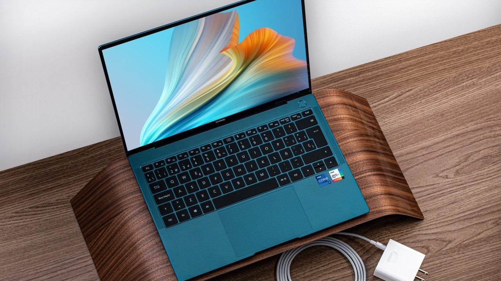

Menos es Más
Las laptops multitarea son dispositivos diseñados para ejecutar varias tareas simultáneamente de manera eficiente. Esto significa que pueden manejar varias aplicaciones y procesos al mismo tiempo sin comprometer el rendimiento general del sistema. La importancia de las laptops multitarea en la actualidad radica en varios aspectos:
- Productividad: En un entorno laboral o educativo, las personas suelen realizar múltiples tareas a la vez, como navegar por internet, redactar documentos, enviar correos electrónicos, realizar llamadas de conferencia, entre otros. Una laptop que pueda manejar eficientemente estas tareas simultáneas mejora la productividad del usuario.
- Entretenimiento: Muchos usuarios utilizan sus laptops para actividades de entretenimiento, como ver películas, escuchar música, jugar videojuegos o navegar por las redes sociales, todo al mismo tiempo. Una laptop multitarea permite disfrutar de estas actividades sin problemas de rendimiento.
- Creatividad: Para profesionales creativos, como diseñadores gráficos, editores de video o músicos, una laptop multitarea es esencial. Estos usuarios suelen trabajar con múltiples programas y archivos grandes al mismo tiempo, por lo que necesitan un sistema que pueda manejar estas demandas sin retrasos ni bloqueos.
- Flexibilidad: Las laptops multitarea ofrecen a los usuarios la flexibilidad de cambiar rápidamente entre diferentes aplicaciones y tareas según sea necesario. Esto es especialmente útil en entornos de trabajo dinámicos donde las prioridades pueden cambiar rápidamente. 

En resumen, las laptops multitarea son fundamentales en la actualidad debido a la creciente demanda de realizar múltiples actividades simultáneamente de manera eficiente, ya sea para trabajo, educación o entretenimiento. Estas laptops permiten a los usuarios ser más productivos, creativos y flexibles en su uso diario de la tecnología.
¿Qué deberia considerar al comprar una laptop para Multitarea?
Al elegir una laptop para multitarea, es importante considerar una serie de requisitos para asegurarte de que el dispositivo pueda manejar eficientemente múltiples tareas simultáneas sin comprometer el rendimiento. Aquí hay algunos aspectos clave a tener en cuenta:
1.-Procesador (CPU)
Opta por un procesador con múltiples núcleos y una alta frecuencia de reloj para un rendimiento multitarea óptimo. Los procesadores Intel Core i5, i7 o i9 y los procesadores AMD Ryzen son buenas opciones.
2.-Memorias RAM
Cuanta más RAM tenga la laptop, mejor podrá manejar múltiples aplicaciones abiertas simultáneamente. Se recomienda al menos 8 GB de RAM para una multitarea fluida, pero 16 GB o más serían ideales para usuarios exigentes.
3.-Al,acenamiento
Un disco de estado sólido (SSD) proporciona tiempos de carga más rápidos y una mejor respuesta del sistema en comparación con los discos duros tradicionales (HDD). Busca una laptop con un SSD de al menos 256 GB para almacenamiento rápido y suficiente espacio para tus aplicaciones y archivos.
4.-Graficos
Si planeas realizar tareas que requieran gráficos intensivos, como edición de video o diseño gráfico, considera una laptop con una tarjeta gráfica dedicada. Esto liberará recursos del procesador principal y mejorará el rendimiento general.
5.-Pantalla
Una pantalla de alta resolución y tamaño adecuado puede mejorar la experiencia multitarea al proporcionar más espacio para organizar ventanas y aplicaciones. Además, considera características como la tecnología IPS para mejores ángulos de visión y reproducción de colores.
6.-Puertos y Conectividad
Asegúrate de que la laptop tenga suficientes puertos USB, HDMI, y otros puertos que puedas necesitar para conectar dispositivos externos como monitores adicionales, unidades de almacenamiento, etc. Además, la conectividad Wi-Fi rápida y Bluetooth pueden ser importantes para la productividad.
7.-Duracion de la Bateria
Si planeas utilizar la laptop fuera de casa u oficina, es fundamental que tenga una buena duración de la batería para mantener tu productividad durante todo el día.
8.-Calidad de Construccion y Portabilidad
Considera el peso y el tamaño de la laptop si planeas llevarla contigo con frecuencia. Además, busca una laptop bien construida y duradera que pueda soportar el uso diario.
Al considerar estos requisitos, podrás elegir una laptop que se adapte mejor a tus necesidades de multitarea y te proporcione un rendimiento confiable y fluido en diversas situaciones.